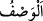
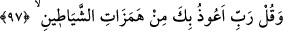
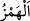
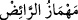
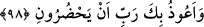

nefsânî istek ve arzularını Allah’ın hukukuyla, O’na karşı yapacağın ibadet ve kullukla
kat’et. Hâdiseler çölünü, ma‘rifet yolunda sülûk ayağıyla geç.”
Hadiseler çölü oradan katedilince
Kadîm mülke mahmeli bir hamlede sür
O nur denizinde dalgıç ol
Üzerindeki zulmeti yıka, arın
Bir oku, bir bil, bir söyle, bir ara
Allah’tan gayrı ne varsa vallahi yalandır, bâtıldır
“Biz onların yakıştırmakta oldukları şeyi” senin durumunun hilâfına sende
bulunmayan sihir, şiir ve delilik gibi sıfatlarla seni vasfettiklerini “çok iyi bilmekteyiz.”
“
”, bir şeyi güzel vasıf ve sıfatları ile zikretmektir. Bu bazen hak, bazen de bâtıl
olur. Burada müşrikler için karşılık ve cezâ ile tehdid; Rasûlullah (s.a.) için tesellî ve
işini Allah Teâlâ’ya havâle etmesine irşâd vardır.
97. Ve de ki: “Rabbim! Şeytanların kışkırtmalarından sana sığınırım!”
“Ve de ki: “Rabbim! Şeytanların kışkırtmalarından” yâni benim emrolunduğum
güzelliklerin -ki kötülüğü iyilikle uzaklaştırmak da bunlardandır- hilâfına olan şeytanın
yoldan çıkarıcı vesveselerinden “sana sığınırım!”
“
” başkasına sığınmak ve ona bağlanmak demektir. “
”in asıl anlamı dürtmektir.
Hayvan terbiyecisinin mahmuzu (
) da buradan gelir. Râğıb der ki: “
”,
sıkmak demektir. Harflerdeki ‘hemz’ de buradan gelir.” Şeytanların insanları
mâsıyetlere teşvik etmesi, hayvan eğiticisinin onu koşturmak veya sıçratmak gibi
hareketler için ona dürtmesine benzetilmiştir. “Kışkırtmaları” diye çoğul yapılması,
vesveseleri defalarca veya türlü türlü olmasından ya da kendisine izâfe edilenin çok
sayıda olmasındandır.
98. Onların yanımda bulunmalarından da sana sığınırım, Rabbim!
“Onların yanımda bulunmalarından” yâni namaz kılarken, Kur’an okurken, ölüm
esnasında ve daha başka herhangi bir durumda yanımda bulunmalarından ve çevremde
dolaşmalarından “da sana sığınırım, Rabbim!”